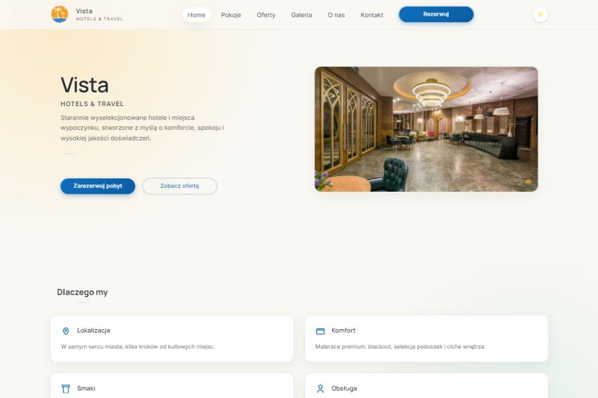

01
Vista
Projekt strony hotelarsko-turystycznej, która łączy inspirujący odbiór marki z czytelnym przedstawieniem oferty pobytowej i lokalizacji.
Przegląd projektu
Vista została zaprojektowana jako nowoczesna strona dla branży hospitality, która ma budować chęć rezerwacji już od pierwszego kontaktu z marką.
Projekt równoważy warstwę inspiracyjną z funkcjonalnością, dzięki czemu użytkownik może zarówno poczuć charakter miejsca, jak i szybko dotrzeć do kluczowych informacji.
W branży turystycznej liczy się nie tylko estetyka, ale też przejrzystość oferty. Vista eksponuje najważniejsze argumenty pobytowe, dba o czytelny układ sekcji i utrzymuje spokojny, nowoczesny rytm wizualny.
Projekt pozostaje konceptem rozwijanym w portfolio, gotowym do dalszego rozszerzenia o warianty pokoi, pakiety pobytowe, integracje rezerwacyjne lub bardziej rozbudowane treści lokalizacyjne.
StronyBiznesTurystykaHospitality
Zakres i akcenty
Każda część projektu została podporządkowana temu, by użytkownik łatwo zrozumiał ofertę i poczuł jakość miejsca.
02
Wizerunek miejsca
03
Scenariusze rozbudowy
Technologie i standard
Warstwa techniczna została zaprojektowana tak, aby strona była szybka, responsywna i łatwa do dalszego utrzymania.
Statyczny frontend dobrze wspiera tego typu projekty wizerunkowo-ofertowe, ponieważ pozwala utrzymać bardzo dobrą wydajność i przewidywalną strukturę treści przy zachowaniu pełnej kontroli nad prezentacją wizualną.
- semantyczne sekcje wspierające logikę treści i SEO,
- responsywny układ dla urządzeń mobilnych i większych ekranów,
- czytelne moduły gotowe do dalszego rozbudowania o nowe bloki.
Prezentacja wizualna
Kadr projektu pokazuje spokojny, nowoczesny kierunek dla marki z obszaru hotelarstwa i turystyki.

Dalszy krok
Zobacz projekt live albo wróć do widoku wszystkich realizacji.
Każda taka podstrona buduje spójny system portfolio, który można rozwijać wraz z kolejnymi projektami.